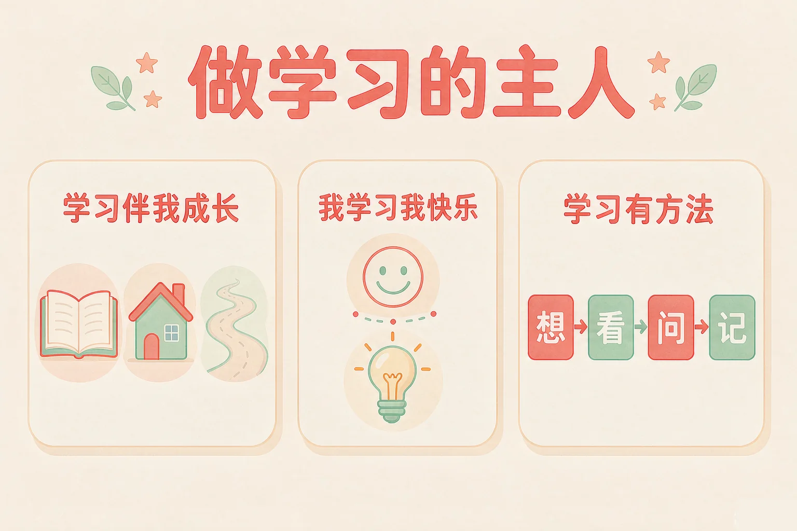
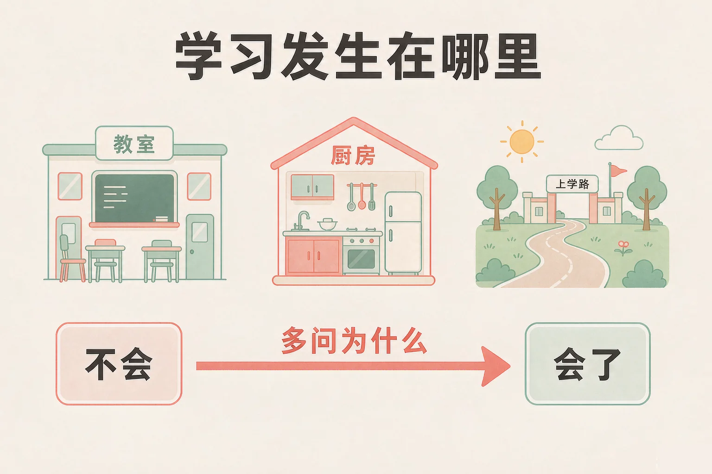
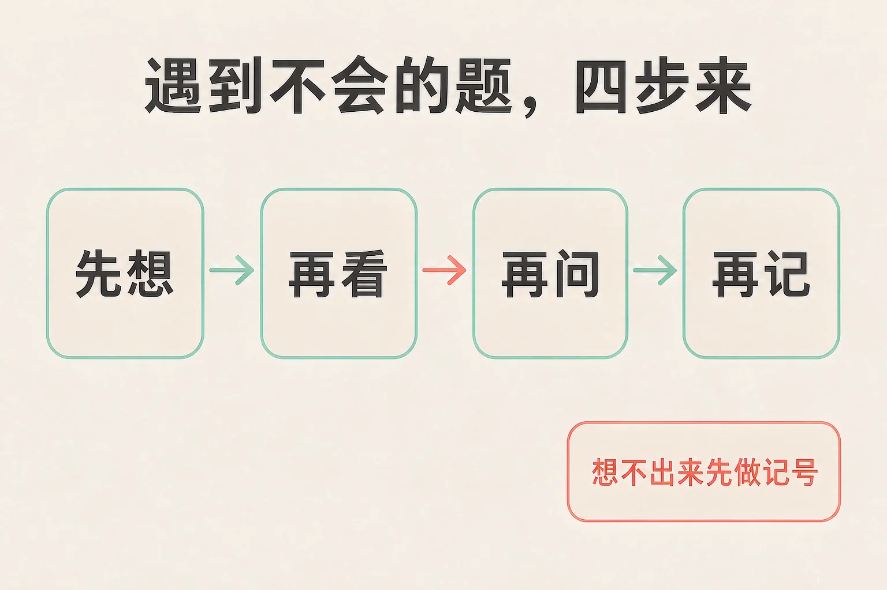

Gallery
v1.0.0 · skill v7.22.0
小学三年级 · 道德修养
学习这件事，是等着别人来安排，还是可以自己做主？

选一个你真正想知道的问题，后面的活动都会围着它转。
选择或输入后，这节课会围绕你的问题展开。
先凭直觉选一个，选完立刻看到解释——错了也没关系，正好知道要重点听哪里。
1. 下面哪个说法最接近「做学习的主人」？
做学习的主人，就是自己安排、自己检查，心里有一份自己的小计划。错因提醒：常见错误是误认为「别人催着我、我照着做也算自己做主」——被推着走和自己安排，是两回事。
2. 遇到一道怎么也做不出来的题，下面哪个做法更合适？
自己先想、再看、再问，这条路走得通，也能让你越来越会想。错因提醒：容易把「坚持」和「硬扛」搞混——一直卡在一道题上会浪费时间，先做个记号跳过去，把会的做完再回头，反而更快。
3. 小美背课文时，不光背下来，还问了问「作者为什么要这样写」。她这样做：
多问一句为什么，是把知识变成自己的办法，换个问法也答得上来。错因提醒：有的同学误认为「背下来就等于学会了」——只记结论、不问原因，换一道题就容易卡住。
为什么要学这一课？
在低年级，很多事情是家里人帮我们安排好的，什么时候写作业、先做什么，都有人提醒（And）；可是到了三年级，作业变多了、时间变紧了，光等着别人来安排，很容易拖到很晚、也容易着急（But）；所以这节课我们先弄清楚：学习到底发生在哪里，又该怎么自己安排它（Therefore）。
学习就是一个人从「不会」变成「会」的过程。它不只在教室里发生，生活里到处都有它。
学习发生的三个地方
课堂上跟着老师学；家里在做家务、做饭、养花的时候学；路上认路、记事、看别人怎么做的时候也在学。
比「是什么」更重要的是「为什么」
记住答案，换一道同类题可能就不会了；问一句为什么，你就有了自己想出来的办法。

🔍 深层理解 换个角度再看一遍这件事，看看能不能说出背后的原理。
看见它：学习到处都是：你在厨房里学会煮一碗面，在放学路上记住了哪个路口要转弯，在花盆边发现花朝着窗户长——这些都在长本领。
解释它：为什么多问一句为什么能让知识更牢？因为「是什么」只是一条结论，而「为什么」是你自己走通的一条路，走过一次，下次还认得。
迁移它：这个习惯到哪里都用得上：学骑车的时候想为什么歪了就倒，做家务的时候想为什么要先做什么，都是同一件事。
先点一件放学以后可能遇到的事，再从三个做法里选一个。选得好会告诉你为什么，选得不太合适也会告诉你还可以试试什么。
先点一件放学以后可能遇到的事。
学习里的高兴，多半来自自己想明白了一件事。而学得比较顺，往往是因为有方法。

有的同学误认为「学得慢是因为我不够聪明」。其实很多差别不在聪明，而在有没有方法：先做什么、不会的时候怎么办、做完要不要检查。方法是可以慢慢学、慢慢练的。
🔍 深层理解 换个角度再看一遍这件事，看看能不能说出背后的原理。
看见它：会学习的同学，做法往往很像：先做要紧的事，遇到难题先自己想一想，问人的时候说得很具体，做完还会检查。
比较它：同样一道不会的题：一直盯着不动，看着很用力；先跳过去把会的做完再回头，反而更快写完、也更少着急——差别就在顺序。
迁移它：这套顺序不只用在作业上：学一件新家务、学一种乐器，也都是先自己想、再看别人怎么做、再问、再记住。
下面是四张步骤卡，顺序被打乱了。请你按你觉得对的顺序，一张一张点下去。
四步走出来的顺序
先点一张你觉得应该排在最前面的步骤卡。
情境：小雨五点半到家，六点半吃晚饭，九点睡觉。今天有数学、语文、英语三样作业，数学最难。请你帮她安排这个傍晚，再说说遇到不会的题该怎么办。
有的同学误认为「不会的题要一直想，想不出来就不能往下做」。其实先做个记号跳过去、把会的做完，再回头解决，反而更省时间，也更不容易着急。
说给同桌听：小雨这个傍晚，哪一步你自己已经做到了？哪一步还想再练一练？
先凭直觉选一个，选完立刻看到解释——错了也没关系，正好知道要重点听哪里。
1. 下面哪句话说得对？
自己安排、自己检查，是「做学习的主人」最实在的样子；学习也发生在家里、路上和做事的过程中。错因提醒：常见错误是误认为「我学得慢就是笨」——很多差别不在聪明，而在有没有方法。
2. 做作业时遇到一道不会的题，下面哪个做法更好？
先想、再看、再问，这条路能让这道题真正变成你会做的题。错因提醒：有人误认为「一直想才叫认真」——卡住太久会耽误后面的作业，先做记号跳过去更聪明。
3. 学完一课以后，「回头想一想自己是怎么做出来的」这件事的好处是：
回头看一看，是把一次经验变成自己的方法。错因提醒：容易把「多做几道题」和「弄懂一道题」搞混——只做不想，做十道还是十道；想清楚了，一道就能顶好几道。
先点一条做法，再点它应该进的筐：学习小主人的做法放一边，需要调整的做法放另一边。
先在上面点一条做法。
分完之后，想一想：
「要调整的」这一边里，有没有哪一条很像你昨天的做法？把它记下来，再说一说换成会学习的做法应该怎么做。
先凭直觉选一个，选完立刻看到解释——错了也没关系，正好知道要重点听哪里。
1. 小刚放学回家先和弟弟玩，吃完晚饭才写作业，每天都写到很晚。如果他想改一改，最合适的做法是：
把要紧的事排在前面，玩起来也更安心。错因提醒：常见错误是误认为「写得快就来得及」——时间紧的时候越写越快，反而容易出错、也容易着急。
2. 预习时看到一个不认识的词，下面哪个做法更好？
先猜再查，是自己想过的过程，印象会比直接被告知深得多。错因提醒：容易把「记住了」当成「懂了」——猜一猜、再确认，才是把新词真正弄明白。
3. 同学说：「不会的题直接问老师最快，自己多想是浪费时间。」你怎么看？
自己先想过，才知道自己卡在哪一步，问的时候说得具体，也更容易听懂。错因提醒：有人误认为「问得快就是学得快」——问之前没有想过，下次遇到同类的题还是不会。
还要记牢一句话：做学习的主人，不是一下子就能做好，而是今天比昨天多安排好一点点。慢一点也没关系，走在自己的路上就好。
给别人讲一遍：请用「自己排、分步来、多问为什么」这三个说法，说清楚你今天学到的一个办法。
再动一动手：写一写你的放学后小计划——先做什么、后做什么、什么时候休息，明天照着做一遍。
三层练习，做完第一、二层就算通关；第三层留给愿意继续探索的同学。
⭐ 基础巩固（必做）
⭐⭐ 能力应用（必做）
⭐⭐⭐ 迁移挑战（选做）
左边是学它之前要先会的，右边是学会之后可以继续探索的，下面是同一领域的伙伴知识。
图谱正在加载：首次进入需下载知识索引（约 1–3 秒），加载完成后本行会自动消失。